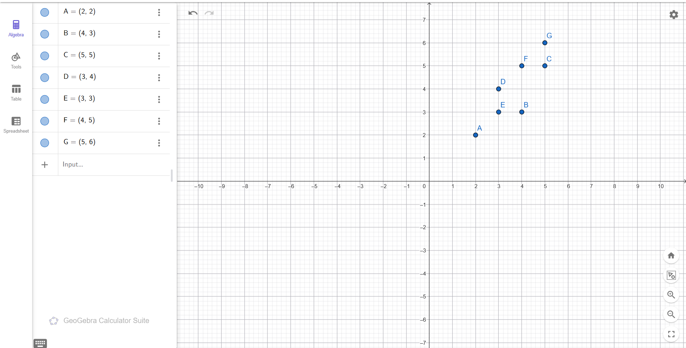
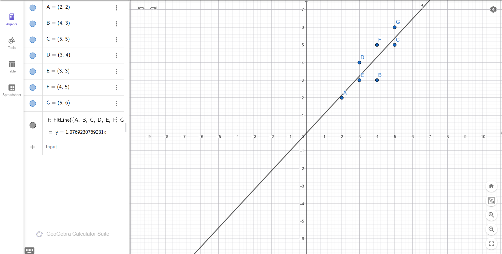
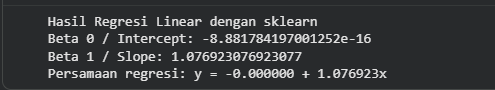
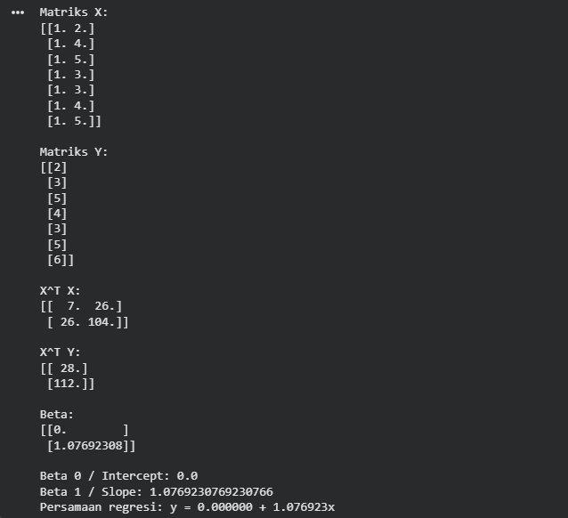

Pertemuan 13#
Regresi Linier#
1. Pengertian Regresi Linier#
Regresi Linier adalah salah satu metode dalam machine learning dan statistika yang digunakan untuk mengetahui hubungan antara variabel bebas (independent variable) dan variabel terikat (dependent variable). Metode ini dapat digunakan untuk membuat prediksi berdasarkan pola hubungan antar data.
Pada tugas ini, regresi linier digunakan untuk mencari garis terbaik yang mewakili hubungan antara nilai x dan y dari beberapa titik koordinat. Garis terbaik tersebut disebut sebagai garis regresi.
Bentuk umum persamaan regresi linier sederhana adalah:
y = β0 + β1x
Keterangan:
yadalah nilai prediksi.β0adalah intercept atau konstanta.β1adalah koefisien regresi atau slope.xadalah variabel bebas.
2. Konsep Dasar Regresi Linier#
Regresi linier bekerja dengan mencari garis yang memiliki jarak kesalahan paling kecil terhadap titik-titik data. Kesalahan tersebut merupakan selisih antara nilai asli y dengan nilai prediksi ŷ.
Dalam proyek ini, koefisien regresi dihitung menggunakan dua cara:
Menggunakan library
sklearndenganLinearRegression.Menggunakan perhitungan analitik dengan rumus matriks:
β̂ = (XᵀX)⁻¹XᵀY
3. Struktur Data#
Data yang digunakan berasal dari titik-titik koordinat pada GeoGebra.
Titik |
x |
y |
|---|---|---|
A |
2 |
2 |
B |
4 |
3 |
C |
5 |
5 |
D |
3 |
4 |
E |
3 |
3 |
F |
4 |
5 |
G |
5 |
6 |
4. Kelebihan Regresi Linier#
Mudah dipahami dan diimplementasikan.
Cocok untuk melihat hubungan antara dua variabel.
Dapat digunakan untuk melakukan prediksi sederhana.
Hasil persamaan regresi mudah dianalisis.
TUGAS#
Laporan Proyek: Analisis Data Menggunakan Regresi Linier#
5. Deskripsi Proyek#
Proyek ini bertujuan untuk melakukan analisis data menggunakan metode Regresi Linier. Data yang digunakan berupa titik koordinat yang dimasukkan ke dalam GeoGebra. Setelah itu, garis regresi dicari menggunakan fitur FitLine.
Selain menggunakan GeoGebra, proyek ini juga menghitung koefisien regresi menggunakan Python dengan library sklearn, serta menghitung secara analitik menggunakan rumus matriks:
β̂ = (XᵀX)⁻¹XᵀY
Variabel yang digunakan:
Variabel bebas:
xVariabel terikat:
y
6. Visualisasi Data pada GeoGebra#

Gambar 1. Data titik A sampai G yang dimasukkan ke dalam GeoGebra.
Langkah-Langkah Pengerjaan#
7. Memasukkan Data Titik ke GeoGebra#
Data titik yang dimasukkan ke dalam GeoGebra adalah:
A = (2, 2)
B = (4, 3)
C = (5, 5)
D = (3, 4)
E = (3, 3)
F = (4, 5)
G = (5, 6)
Setelah semua titik dimasukkan, GeoGebra akan menampilkan titik-titik tersebut pada bidang koordinat.
Gambar 2. Tampilan titik koordinat A sampai G pada GeoGebra.
8. Membuat Garis Regresi Menggunakan FitLine#
Untuk membuat garis regresi di GeoGebra, digunakan perintah:
FitLine({A, B, C, D, E, F, G})
Perintah tersebut akan menghasilkan garis regresi berdasarkan seluruh titik data.

Gambar 3. Hasil garis regresi menggunakan perintah FitLine pada GeoGebra.
Berdasarkan hasil GeoGebra, diperoleh persamaan regresi:
y = 1.0769230769231x
Persamaan tersebut dapat dibulatkan menjadi:
y = 1.076923x
9. Menghitung Regresi Linier Menggunakan sklearn#
Perhitungan regresi linier juga dilakukan menggunakan Python dengan library sklearn.
import numpy as np
from sklearn.linear_model import LinearRegression
# Data
X = np.array([[2], [4], [5], [3], [3], [4], [5]])
Y = np.array([2, 3, 5, 4, 3, 5, 6])
# Model regresi linier
model = LinearRegression()
model.fit(X, Y)
# Hasil koefisien
beta_0 = model.intercept_
beta_1 = model.coef_[0]
print("Hasil Regresi Linear dengan sklearn")
print("Beta 0 / Intercept:", beta_0)
print("Beta 1 / Slope:", beta_1)
print(f"Persamaan regresi: y = {beta_0:.6f} + {beta_1:.6f}x")
Hasil output program:
Hasil Regresi Linear dengan sklearn
Beta 0 / Intercept: 0.0
Beta 1 / Slope: 1.0769230769230769
Persamaan regresi: y = 0.000000 + 1.076923x

Gambar 4. Output program regresi linier menggunakan library sklearn.
10. Menghitung Koefisien Regresi Secara Analitik#
Perhitungan analitik dilakukan menggunakan rumus:
β̂ = (XᵀX)⁻¹XᵀY
Karena model regresi yang digunakan adalah:
y = β0 + β1x
maka matriks X dibuat dengan kolom pertama berisi angka 1 sebagai intercept.
X =
[[1, 2],
[1, 4],
[1, 5],
[1, 3],
[1, 3],
[1, 4],
[1, 5]]
Y =
[[2],
[3],
[5],
[4],
[3],
[5],
[6]]
Kode Python untuk perhitungan analitik:
import numpy as np
# Data
x = np.array([2, 4, 5, 3, 3, 4, 5])
y = np.array([2, 3, 5, 4, 3, 5, 6])
# Membentuk matriks X dengan kolom pertama berisi 1
X = np.column_stack((np.ones(len(x)), x))
Y = y.reshape(-1, 1)
# Rumus beta = (X^T X)^-1 X^T Y
XT = X.T
XTX = XT @ X
XTY = XT @ Y
beta = np.linalg.inv(XTX) @ XTY
print("Matriks X:")
print(X)
print("\nMatriks Y:")
print(Y)
print("\nX^T X:")
print(XTX)
print("\nX^T Y:")
print(XTY)
print("\nBeta:")
print(beta)
print("\nBeta 0 / Intercept:", beta[0][0])
print("Beta 1 / Slope:", beta[1][0])
print(f"Persamaan regresi: y = {beta[0][0]:.6f} + {beta[1][0]:.6f}x")
Hasil perhitungan:
X^T X:
[[ 7. 26.]
[ 26. 104.]]
X^T Y:
[[ 28.]
[112.]]
Beta:
[[0. ]
[1.07692308]]
Beta 0 / Intercept: 0.0
Beta 1 / Slope: 1.076923076923077
Persamaan regresi: y = 0.000000 + 1.076923x

Gambar 5. Output perhitungan koefisien regresi secara analitik menggunakan rumus matriks.
11. Hasil Perbandingan#
Hasil dari ketiga metode dapat dibandingkan sebagai berikut:
Metode |
Hasil Persamaan Regresi |
|---|---|
GeoGebra FitLine |
|
Python sklearn |
|
Analitik Matriks |
|
Dari tabel tersebut dapat dilihat bahwa hasil GeoGebra, Python sklearn, dan perhitungan analitik menghasilkan persamaan regresi yang sama.
12. Hasil dan Pembahasan#
Berdasarkan data titik A sampai G, diperoleh garis regresi linier dengan persamaan:
y = 1.076923x
Nilai β0 atau intercept adalah 0, sedangkan nilai β1 atau slope adalah 1.076923. Artinya, setiap kenaikan nilai x sebesar 1 satuan akan meningkatkan nilai prediksi y sekitar 1.076923.
Hasil dari GeoGebra menunjukkan garis regresi yang melewati sekitar kumpulan titik data. Hasil ini sama dengan perhitungan menggunakan sklearn dan rumus analitik matriks. Dengan demikian, proses perhitungan sudah sesuai.
13. Kesimpulan#
Regresi Linier berhasil digunakan untuk menganalisis hubungan antara variabel x dan y pada data titik koordinat. Berdasarkan hasil perhitungan, diperoleh persamaan regresi:
y = 1.076923x
Hasil perhitungan menggunakan GeoGebra, Python sklearn, dan rumus analitik memberikan hasil yang sama. Oleh karena itu, dapat disimpulkan bahwa model regresi linier yang dihasilkan sudah benar dan sesuai dengan data yang diberikan.